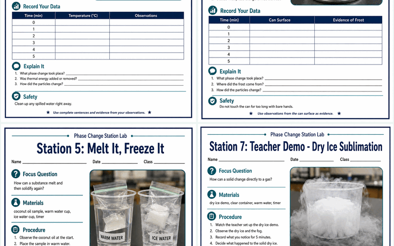
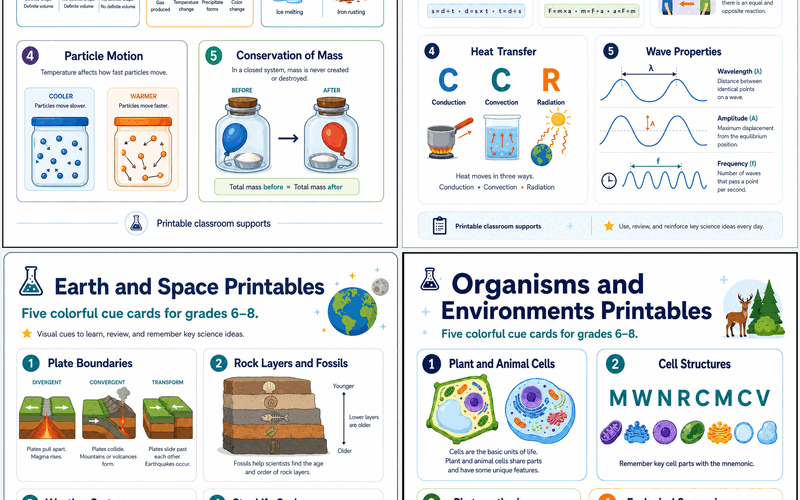
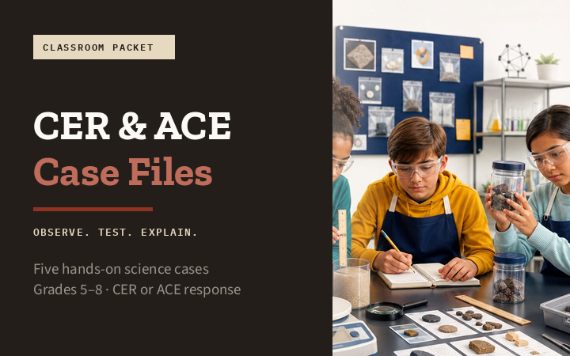
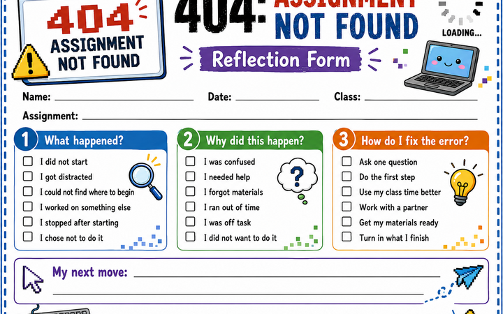
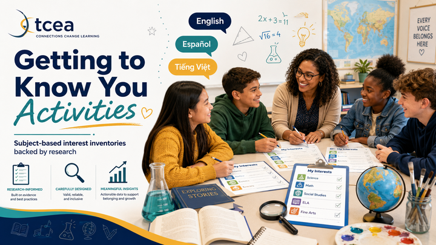

Collections
Each collection is free to use and share. More on the way.
Science

Phase Change Station Lab
Seven hands-on middle school science stations — melting, condensation, evaporation, deposition, freezing, particle modeling, and a dry-ice sublimation demo. Students gather evidence and explain changes with particle models. Aligned to Texas TEKS & NGSS MS-PS1-4.

Science Supplemental Aids
Visual cue cards for middle school science — mnemonics, diagrams, particle models, and formula triangles across four TEKS strands, grades 6–8. Classroom supports for Science teaching and learning.

CER & ACE Case Files
Five hands-on science cases for Grades 5–8. Students gather the evidence on Page 1, then argue from it on Page 2 — Claim–Evidence–Reasoning or Articulate–Connect–Extend. Teacher guide, answer keys, and editable PowerPoint decks included.
Classroom Management

Student Refusal Forms
Meme, gaming, and content-area reflection sheets for the moment a reminder won't help — turning “I'm not doing this” into “here's what I'll try next.”

Getting to Know You
Subject-based interest-inventory worksheets for Grades K–12 in English, Spanish, and Vietnamese — a research-backed way to start the year.